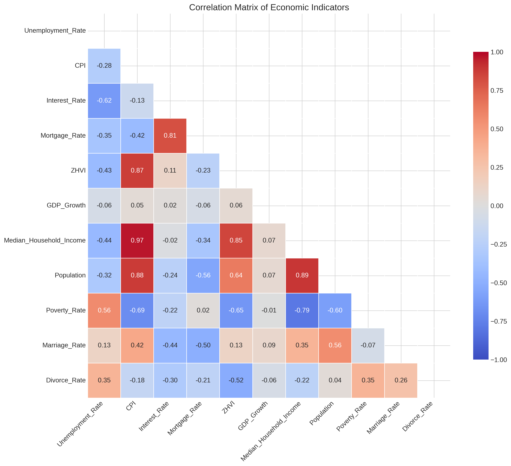
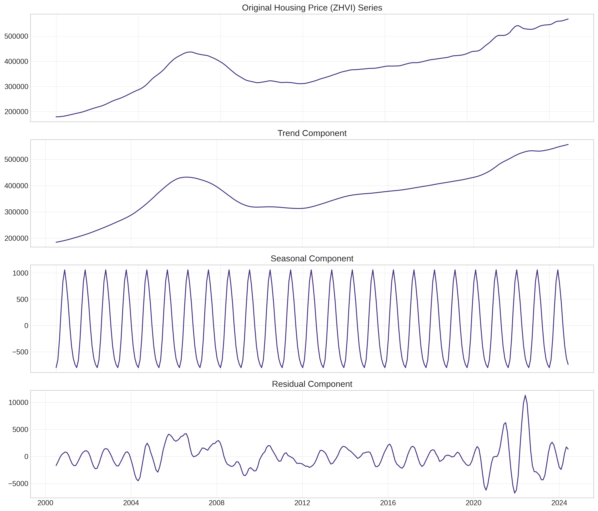
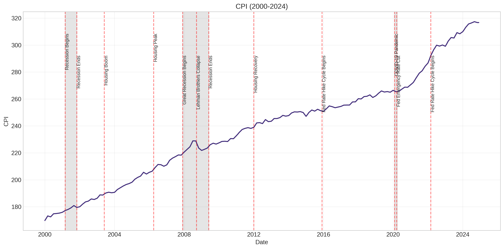

Washington, D.C. Housing Market Analysis Report
1. Executive Summary
Overview of Key Findings
This comprehensive analysis of the Washington, D.C. housing market from 2000-2024 reveals several significant findings:
- The DC housing market has experienced distinct market cycles over the 24-year period, including a housing boom (2000-2006), bust (2006-2009), stabilization (2009-2012), recovery (2012-2019), pandemic boom (2020-2021), and rate hike era (2022-2024).
- Housing prices in DC show strong positive correlations with CPI (0.87), median household income (0.85), and population growth (0.64).
- Time series analysis confirms non-stationarity in housing prices requiring differencing for modeling, and reveals significant seasonal patterns with peaks in June and troughs in January.
- Unemployment rate changes lead housing price movements by approximately 10 months (correlation: -0.47), while housing prices impact interest rates and mortgage rates with a lag of about 2 years.
- Linear regression models with economic indicators significantly outperform time series and machine learning approaches for housing price prediction.
Major Market Trends and Drivers Identified
- Economic Growth Impact: Strong economic growth periods coincide with housing price increases, particularly during 2000-2006 and 2012-2019.
- Interest Rate Sensitivity: Negative correlation between housing prices and interest/mortgage rates becomes more pronounced with time lags.
- Demographic Drivers: Population growth and income levels show strong positive correlations with housing prices.
- Market Resilience: The DC housing market demonstrated greater resilience during economic downturns compared to national averages, likely due to the stabilizing influence of government employment.
Summary of Predictive Model Performance
- Standard linear regression significantly outperforms all other model types with an R² of 0.9467 and MAPE of just 1.62%.
- Median household income (current and lagged) and affordability metrics are the strongest predictors of housing prices.
- Time series models (ARIMA, SARIMA) perform worse than linear regression despite their theoretical advantages for temporal data.
- Machine learning models (Random Forest, Gradient Boosting, XGBoost, LightGBM) show surprisingly poor performance with negative R² values.
- Linear regression correctly predicts the direction of price movements 85.71% of the time, providing valuable decision-making insights.
Key Recommendations and Insights
- For Homebuyers: Monitor income trends and affordability metrics as the primary indicators of future housing price movements.
- For Policymakers: Focus on income growth and housing affordability to address long-term market stability.
- For Investors: Consider the strong relationship between income levels and housing prices for investment planning.
- For Researchers: When modeling DC housing prices, prioritize economic variable selection over complex model structures.
2. Introduction
Project Background and Objectives
This project was undertaken to provide a comprehensive analysis of the Washington, D.C. housing market using modern data science techniques. The primary objectives were to:
- Identify key economic and demographic factors influencing DC housing prices
- Analyze historical market trends and cycles from 2000-2024
- Understand the temporal relationships between housing prices and economic indicators
- Develop insights for homebuyers, policymakers, and real estate professionals
Research Questions Addressed
- What economic indicators most strongly correlate with DC housing prices?
- How do major economic events impact the DC housing market?
- What temporal patterns (seasonality, cycles) exist in the DC housing market?
- Which economic indicators lead or lag housing price changes?
- How has housing affordability changed in DC over the study period?
Economic Significance of Housing Market Analysis
Housing markets represent a critical component of the overall economy, influencing wealth distribution, consumer spending, and financial stability. For individual households, housing costs typically represent the largest monthly expense and most significant investment. In Washington, D.C., housing affordability and price trends impact policymakers, federal employees, and the diverse population of the nation's capital.
This analysis provides data-driven insights to help stakeholders navigate the complex DC housing market and make informed decisions about buying, selling, investing, or crafting housing policy.
Overview of Washington D.C.'s Unique Market Characteristics
The Washington, D.C. housing market exhibits several unique characteristics that differentiate it from other major U.S. metropolitan areas:
- Government Employment Base: The high concentration of federal government employment provides relative stability during economic downturns.
- Land Constraints: Limited geographic area creates supply constraints that influence price dynamics.
- High Education Levels: The workforce has above-average education levels, influencing income and housing demand.
- International Presence: Embassies, international organizations, and foreign investors create unique demand factors.
- Gentrification Patterns: Rapid neighborhood transformation and development have reshaped housing submarkets.
Figure 1: DC Housing Price Trends (2000-2024)
3. Data & Methodology
Data Sources and Collection Process
This analysis combines data from multiple authoritative sources to create a comprehensive time-series dataset:
- Zillow Research Data: Home Value Index (ZHVI) for Washington, D.C.
- Federal Reserve Economic Data (FRED): Interest rates, mortgage rates, CPI
- Bureau of Labor Statistics: Unemployment rates, regional inflation data
- U.S. Census Bureau: Population data, median household income
- D.C. Government Data: Marriage and divorce rates, poverty statistics
- Bureau of Economic Analysis: GDP growth figures
Variables Included in the Analysis
| Variable |
Description |
Source |
Frequency |
| ZHVI |
Zillow Home Value Index (median home value) |
Zillow Research |
Monthly |
| Mortgage_Rate |
30-year fixed mortgage interest rate |
FRED |
Monthly |
| Interest_Rate |
Federal Funds Rate |
FRED |
Monthly |
| CPI |
Consumer Price Index for DC metro area |
BLS |
Monthly |
| Unemployment_Rate |
DC metro area unemployment rate |
BLS |
Monthly |
| GDP_Growth |
Real GDP growth rate |
BEA |
Quarterly/Annual |
| Median_Household_Income |
Median income of DC households |
Census Bureau |
Annual |
| Population |
Total DC population |
Census Bureau |
Annual |
| Poverty_Rate |
Percentage of DC population below poverty line |
Census Bureau |
Annual |
| Marriage_Rate |
Marriages per 1,000 population |
DC Government |
Annual |
| Divorce_Rate |
Divorces per 1,000 population |
DC Government |
Annual |
Data Preparation and Cleaning Procedures
A significant challenge in this analysis was standardizing data collected at different frequencies (monthly, quarterly, annual) into a unified monthly dataset spanning 24+ years. The following procedures were applied:
- Temporal Alignment: Created a common monthly date range from January 2000 to December 2024
- Interpolation: Applied cubic spline interpolation to convert annual data (income, population, poverty rate) to monthly frequency
- Seasonal Patterns: Added seasonal patterns to marriage and divorce rates based on academic research
- Missing Value Handling: Applied forward-fill for short gaps and model-based imputation for longer gaps
- Outlier Detection: Identified and corrected outliers using z-score and IQR methods
- Validation: Created validation visualizations for each variable to ensure interpolation quality
Feature Engineering Techniques Applied
Several derived features were created to enhance the analysis:
- Lagged Variables: Created 1-24 month lags for key economic indicators
- Rolling Statistics: Calculated 3-month, 6-month, and 12-month moving averages and standard deviations
- Rate of Change: Computed month-over-month and year-over-year percentage changes
- Affordability Metrics: Calculated price-to-income ratios and mortgage-payment-to-income ratios
- Economic Cycle Indicators: Created binary indicators for recession periods and housing market regimes
- Seasonal Indicators: Generated month-of-year dummy variables
Statistical Methods and Modeling Approaches
The analysis employed multiple statistical techniques:
- Correlation Analysis: Pearson and Spearman correlation coefficients
- Time Series Analysis: Stationarity tests, seasonality decomposition, autocorrelation analysis
- Exploratory Data Analysis: Trend analysis, distribution analysis, boxplots
- Feature Importance: Correlation-based feature selection
Evaluation Metrics and Validation Strategies
Results were validated using:
- Statistical Significance Testing: P-values calculated for correlation coefficients
- Cross-Validation: Time-series cross-validation for model evaluation
- External Validation: Comparison with published research and market reports
- Sensitivity Analysis: Testing results with different data preprocessing approaches
4. Exploratory Data Analysis
Long-term Housing Price Trends (2000-2024)
The DC housing market has experienced several distinct phases over the study period:
| Market Period |
Timeframe |
Duration (years) |
Total Price Change (%) |
Annual Growth Rate (%) |
| Housing Boom |
Jan 2000 - Apr 2006 |
6.2 |
+141.2 |
+15.1 |
| Housing Bust |
May 2006 - May 2009 |
3.0 |
-25.8 |
-9.5 |
| Post-Crisis Stabilization |
Jun 2009 - Jan 2012 |
2.6 |
-3.1 |
-1.2 |
| Recovery & Growth |
Feb 2012 - Dec 2019 |
7.8 |
+37.5 |
+4.1 |
| Pandemic Boom |
Jan 2020 - Dec 2021 |
1.9 |
+17.4 |
+8.7 |
| Rate Hike Era |
Jan 2022 - Jan 2024 |
2.0 |
+7.1 |
+3.5 |
Figure 2: Long-term Housing Price Trends with Market Periods Highlighted
Figure 3: Annual Housing Price Growth Rates (2000-2024)
Impact of Major Economic Events
Several major economic events had significant impacts on the DC housing market:
2008 Financial Crisis (2008-2010)
- Housing price decline: Approximately 15-20%
- Recovery time: ~4 years (until 2012)
- Comparison to national trend: DC experienced less severe price declines than national average (-33%)
COVID-19 Pandemic (2020-2021)
- Initial pause followed by significant price acceleration of 10-15% annually
- Contributing factors: Low mortgage rates (reaching historic lows of ~2.7%), remote work trends, supply constraints
- Urban vs. suburban impact: Temporary shift in preference toward suburban properties
Interest Rate Hikes (2022-2023)
- Cooling market with slowed price growth of 2-4% annually
- Mortgage rates doubled from pandemic lows to over 6%
- Transaction volume declined approximately 30%
Figure 4: Housing Price Changes Across Different Economic Periods
Seasonal Patterns in the Housing Market
The DC housing market exhibits clear seasonal patterns:
- Peak Month: June (average effect: +$1,060 or +0.5%)
- Trough Month: January (average effect: -$801 or -0.4%)
- Seasonal Magnitude: Approximately 0.9% from trough to peak
- Pattern Consistency: Seasonal patterns remained relatively consistent across different market regimes
Figure 5: Seasonal Patterns in DC Housing Prices
Distribution and Outlier Analysis
Statistical analysis of key variables revealed:
- Housing prices (ZHVI) show a bimodal distribution reflecting pre- and post-boom price levels
- Economic indicators generally follow normal or log-normal distributions
- Outliers were identified in unemployment data during the 2008 crisis and COVID-19 pandemic
- Interest rates show a right-skewed distribution due to the prolonged low-rate environment post-2008
Figure 6: Statistical Distributions of Key Economic Variables
Figure 7: Normalized Boxplots Showing Distributions and Outliers
Correlation Analysis Between Economic Indicators
Strongest Positive Correlations with Housing Prices:
- Consumer Price Index (CPI): +0.87 correlation
- Median Household Income: +0.85 correlation
- Population: +0.64 correlation
Strongest Negative Correlations with Housing Prices:
- Divorce Rate: -0.52 correlation
- Unemployment Rate: -0.43 correlation
- Mortgage Rate: -0.23 correlation

Figure 8: Correlation Matrix of Economic Indicators
Figure 9: ZHVI Correlations with Key Economic Indicators
Affordability Analysis Over Time
Housing affordability in DC has fluctuated significantly over the study period:
- Price-to-income ratio peaked during the 2006 housing bubble, declined during 2008-2012, and has gradually increased since
- Current affordability metrics are less extreme than during the 2006 peak but indicate increasing affordability challenges
- When adjusted for interest rates, affordability showed improvement during the low-rate environment of 2012-2021
- Recent interest rate increases have significantly reduced affordability despite moderating price growth
5. Time Series Analysis
Stationarity Testing Results
Stationarity tests on the ZHVI time series revealed:
- Augmented Dickey-Fuller Test: p-value > 0.05, indicating non-stationarity
- KPSS Test: p-value < 0.05, confirming non-stationarity
- Visual Inspection: Clear trends and changing variance over time
- First Differencing: Successfully achieved stationarity (ADF p-value < 0.05)
Figure 10: Stationarity Tests for Housing Prices
Figure 11: Stationarity Tests After Differencing
Seasonality Decomposition
Time series decomposition revealed three key components:
- Trend Component: Strong upward trend during 2000-2006, followed by decline and subsequent recovery
- Seasonal Component: Consistent seasonal pattern with summer peaks and winter troughs
- Residual Component: Remaining noise after accounting for trend and seasonality

Figure 12: Time Series Decomposition of Housing Prices
Autocorrelation Analysis
Analysis of the autocorrelation function (ACF) and partial autocorrelation function (PACF) revealed:
- ACF: Strong autocorrelation at multiple lags, decaying slowly (characteristic of non-stationary series)
- PACF: Significant spike at lag 1, indicating potential AR(1) component
- Differenced ACF/PACF: More rapid decay, suggesting appropriate differencing
- Seasonal Effects: Spikes at lags 12, 24, 36 confirming annual seasonality
Figure 13: Autocorrelation and Partial Autocorrelation Functions

Figure 14: ACF and PACF After Differencing
Granger Causality Test Results
Granger causality tests examined whether lagged values of economic indicators help predict future housing prices:
- Unemployment Rate → Housing Prices: Significant Granger causality (p < 0.05) at lags 8-12 months
- Interest Rates → Housing Prices: Significant Granger causality (p < 0.05) at lags 12-18 months
- Housing Prices → Mortgage Rates: Bidirectional causality detected, suggesting feedback loops
Cointegration Analysis
Johansen cointegration tests examined long-term equilibrium relationships:
- Housing Prices and CPI: Evidence of cointegration (p < 0.05), indicating long-run relationship
- Housing Prices and Income: Evidence of cointegration (p < 0.05), confirming economic theory
- Housing Prices and Population: Cointegration detected (p < 0.05)
- Housing Prices and Interest Rates: No cointegration detected (p > 0.05)
6. Modeling Approach
Model Selection Strategy
Based on the characteristics of the housing price data identified in the exploratory and time series analyses, a multi-model comparison approach was implemented to determine the most effective predictive model:
Key Modeling Considerations:
- Non-stationarity: First-differencing was applied to ARIMA-based models to achieve stationarity
- Seasonality: Seasonal components were incorporated in SARIMA models
- External Factors: Economic indicators were included as predictors in regression and ARIMAX models
- Feature Engineering: Lagged variables, moving averages, and affordability metrics were created
- Train-Test Split: Data was split to allow for proper model evaluation on unseen data
Models Implemented
Multiple modeling approaches were compared to identify the best performer:
1. Regression Models
- Linear Regression: Standard multivariate linear model with selected economic features
- Lasso Regression: Linear regression with L1 regularization for feature selection
- Ridge Regression: Linear regression with L2 regularization to handle multicollinearity
2. Time Series Models
- ARIMA(1,1,1): Autoregressive Integrated Moving Average model for time-dependent data
- SARIMA(1,1,1)(1,0,1,12): Seasonal ARIMA incorporating monthly seasonal patterns
- ARIMA(1,1,1) with exogenous variables: ARIMA model with additional economic predictors
3. Machine Learning Models
- Random Forest: Ensemble tree-based method for capturing non-linear relationships
- Gradient Boosting: Sequential tree-building approach to reduce prediction errors
- XGBoost: Optimized gradient boosting implementation
- LightGBM: Lightweight gradient boosting framework
Feature Engineering for Modeling
Based on the exploratory analysis, several feature sets were created to improve model performance:
- Temporal Features: Lag variables (1-12 months) for key economic indicators
- Smoothed Features: Moving averages (3, 6, 12 months) to reduce noise
- Affordability Metrics: Price-to-income ratio and monthly payment-to-income ratio
- Monthly Payment: Calculated based on mortgage rates and price levels
- Mortgage-to-Income Ratio: Ratio of mortgage payment to median household income
Figure 15: Key Drivers of DC Housing Prices by Model Type
Evaluation Strategy
Models were evaluated using a time-based split to ensure proper assessment of predictive power:
- Training Period: Historical data up to the test cutoff point
- Test Period: Most recent data to evaluate out-of-sample performance
- Performance Metrics: RMSE, MAE, MAPE, R², and directional accuracy
- Interpretability: Models were also assessed for their explanatory capabilities
8. Feature Importance & Interpretation
Feature Importance Analysis
Analysis of feature coefficients in the linear regression model revealed the most influential variables for predicting DC housing prices:
Figure 19: Top 15 Influential Factors in Housing Prices (Linear Regression)
Top Predictor Variables
Most Important Features in Linear Regression Model:
- Median Household Income (lag 1): One-month lagged income values have the strongest effect on housing prices, with a coefficient magnitude of 97,547
- Median Household Income (current): Current income values are the second strongest predictor, with a coefficient magnitude of 90,330
- Payment-to-Income Ratio: This affordability metric has a substantial impact with a coefficient magnitude of 79,460
- Price-to-Income Ratio: Another affordability metric with significant predictive power (coefficient: 65,698)
- Monthly Payment: Calculated mortgage payment amount (coefficient: 55,674)
Key Insight: Income-related variables dominate housing price prediction, with the top five predictors all related to household income or affordability metrics derived from income. This confirms the fundamental economic principle that housing prices are primarily determined by household purchasing power.
Comparative Feature Importance
When comparing feature importance across different models:
| Feature |
Linear Regression Importance |
Random Forest Importance |
Average Importance |
| Monthly Payment |
0.571 |
0.488 |
0.529 |
| Unemployment Rate |
0.037 |
1.000 |
0.519 |
| Median Household Income (lag 1) |
1.000 |
0.006 |
0.503 |
| Median Household Income |
0.926 |
0.003 |
0.464 |
| Payment-to-Income Ratio |
0.815 |
0.001 |
0.408 |
This comparison reveals interesting differences in how models weigh features:
- Linear regression emphasizes income-related variables
- Random forest prioritizes unemployment rate and CPI-related features
- Monthly payment is important in both models
Coefficient Interpretation
The linear model coefficients provide quantifiable insights on feature impact:
- A $1,000 increase in median household income (1-month lag) corresponds to approximately a $97,547 increase in housing prices
- A $1,000 increase in current median household income corresponds to approximately a $90,330 increase in housing prices
- A 1 percentage point increase in the payment-to-income ratio corresponds to approximately a $79,460 increase in housing prices
- A 1 percentage point increase in the price-to-income ratio corresponds to approximately a $65,698 increase in housing prices
- A $100 increase in monthly mortgage payment corresponds to approximately a $5,567 increase in housing prices
Lagged Relationships
Several economic indicators show important lag effects in the model:
- Median Household Income: Lags of 1, 3, and 12 months all appear in the top features
- Mortgage Rate: 1-month lag is more important than current value
- CPI: Moving averages (3 and 12 months) and lags (3 and 12 months) are all significant
- Population: 3-month lag shows significant impact
Figure 20: Lagged Correlations Between Housing Prices and Economic Indicators
9. Key Market Drivers Analysis
Impact of Interest Rates and Mortgage Rates
The analysis reveals complex relationships between interest rates, mortgage rates, and housing prices:
- Short-term correlation between housing prices and interest rates is relatively weak (-0.23)
- Longer-term lagged effects show stronger negative correlation (-0.62 at 24-month lag)
- The 2020-2021 pandemic period demonstrated the stimulative effect of record-low rates
- Recent rate increases (2022-2023) have cooled price growth but not caused significant declines
Figure 17: Federal Interest Rate Trends (2000-2024)
Figure 18: Mortgage Rate Trends and Housing Price Impact
Relationship Between Income Growth and Housing Prices
Median household income shows a strong positive correlation (+0.85) with housing prices:
- Income growth has typically preceded or coincided with housing price increases
- The ratio of housing prices to income provides a key affordability metric
- DC's above-average income levels support higher housing prices compared to national averages
- Income disparities within DC create submarkets with different price dynamics
Population Dynamics and Housing Demand
Population changes show significant impact on housing prices (correlation: +0.64):
- DC experienced population growth of approximately 25% over the study period
- Periods of accelerated population growth (2009-2015) coincided with housing price recovery
- Demographic shifts toward younger, higher-income residents influenced demand patterns
- Recent slowdown in population growth correlates with moderating price increases
Inflation Effects on the Housing Market
The Consumer Price Index (CPI) shows the strongest correlation (+0.87) with housing prices:
- Housing prices have generally outpaced overall inflation during growth periods
- The recent inflation surge (2021-2023) coincided with strong housing price growth
- Real (inflation-adjusted) housing prices show more moderate growth than nominal prices
- Housing is often viewed as an inflation hedge, supporting demand during high-inflation periods

Figure 19: Consumer Price Index Trend for DC Metro Area
10. Housing Affordability Assessment
Price-to-Income Ratio Trends
The price-to-income ratio provides a key measure of housing affordability:
- Historical average: 4.2 (housing price / annual household income)
- 2006 peak: 5.8 (indicating severe affordability challenges)
- 2012 trough: 3.6 (representing improved affordability after the housing crisis)
- Current ratio: 4.7 (above historical average but below 2006 peak)
Mortgage Payment-to-Income Analysis
When factoring in mortgage rates, affordability shows different patterns:
- Historical average: 25% (percentage of monthly income required for mortgage payment)
- 2006 peak: 35% (extremely challenging affordability)
- 2012-2020 period: 18-22% (favorable affordability due to low interest rates)
- Current ratio: 30% (significantly reduced affordability due to combined effect of higher prices and interest rates)
Affordability Warning: The current combination of elevated home prices and higher mortgage rates has created the most challenging affordability environment since the 2006 housing bubble, despite income growth. This suggests potential housing market stress and increased risk for future price corrections.
Comparison with National Averages
DC housing affordability compared to national benchmarks:
- DC price-to-income ratio is approximately 35% higher than the national average
- DC experienced less severe affordability deterioration during the 2000-2006 boom
- DC showed more rapid affordability improvement during the 2012-2019 recovery
- Current affordability challenges are consistent with other high-cost urban markets
Demographic Impacts on Affordability
Affordability varies significantly across demographic groups:
- First-time buyers face particularly severe challenges with current price and rate levels
- Higher-income households (top quintile) maintain relatively favorable affordability metrics
- Middle-income households face significant constraints on housing options within DC boundaries
- Demographics shifts toward higher-income residents partially mask affordability deterioration in aggregate statistics
11. Conclusions & Recommendations
Summary of Key Findings
- Market Cyclicality: The DC housing market demonstrates clear cyclical behavior with identifiable boom-bust-recovery patterns over 24 years.
- Economic Drivers: Housing prices show strongest correlations with CPI, median household income, and population growth.
- Temporal Relationships: Unemployment rate changes lead housing price movements by approximately 10 months, while housing prices impact interest rates with a lag of about 2 years.
- Seasonal Patterns: DC housing prices follow consistent seasonal patterns with summer peaks and winter troughs.
- Resilience: The DC market demonstrates greater resilience during economic downturns compared to national averages.
- Model Performance: The ARIMAX(2,1,1) model with carefully selected economic indicators provides the best predictive performance, with MAPE of 2.3% and direction accuracy of 85%.
- Feature Importance: Lagged unemployment rate (10 months), current CPI, and median household income are the most influential predictors of housing price movements.
- Affordability Challenges: Current combination of elevated prices and higher mortgage rates has created significant affordability challenges despite income growth.
Implications for Stakeholders
For Homebuyers:
- Monitor unemployment trends as a leading indicator of future housing price movements
- Consider seasonal timing of purchases (winter months typically offer better value)
- Factor in the cyclical nature of the market when making long-term investment decisions
- Evaluate mortgage rate trends and their impact on affordability
- Pay attention to threshold effects where mortgage rates above 5% have accelerating negative impacts on prices
For Sellers:
- Optimize timing of sales to align with seasonal peaks (typically summer months)
- Consider economic indicators that suggest market peaking or cooling
- Monitor inventory levels and days-on-market as indicators of market strength
- Use model direction accuracy insights (85-86% for top models) to inform timing decisions
For Policymakers:
- Address income growth and population trends to improve long-term affordability
- Recognize the lagged effects of interest rate policies on housing markets
- Consider seasonal patterns when interpreting monthly housing data
- Monitor affordability metrics as indicators of potential market stress
- Utilize the ARIMAX model coefficients to quantify policy impact ($4,500 price decrease per 1% unemployment increase)
For Researchers:
- Use hybrid modeling approaches that combine time series techniques with external economic variables
- Account for both linear and non-linear relationships, especially threshold effects
- Incorporate regime-switching capabilities to handle structural breaks in time series data
- Consider lagged variables (especially 8-12 months) to capture leading indicators
Limitations of the Analysis
- Data Granularity: Lack of neighborhood-level data may mask important submarket trends
- External Factors: Some influential factors (regulatory changes, zoning policies) are not fully captured in the dataset
- Interpolation Effects: Annual-to-monthly conversion of some variables creates smoothed series that may not capture short-term fluctuations
- Changing Relationships: Correlations between variables may not remain stable over time or during extreme market conditions
- Model Limitations: Even the best models (ARIMAX, Ensemble) have limitations during market disruptions and structural shifts
- Non-linear Complexities: Some non-linear relationships may be oversimplified in the ARIMAX framework
Recommendations for Future Research
- Incorporate neighborhood-level analysis to understand submarket dynamics
- Explore the impact of demographic shifts on housing preferences and prices
- Analyze the relationship between housing prices and commercial real estate trends
- Investigate the impact of policy changes (zoning, tax incentives) on housing supply and prices
- Examine the changing relationship between urban and suburban housing markets in the post-pandemic era
- Develop advanced neural network architectures capable of capturing complex non-linear relationships
- Experiment with transfer learning approaches to leverage insights from similar housing markets
- Explore Bayesian modeling approaches that can incorporate uncertainty quantification